De cavaleiros de armaduras brilhantes a espreitadores furtivos e astutos lançadores de feitiços, cada classe do World of Warcraft apresenta desafios e experiências de jogo únicas para você superar. Qual será seu destino?
Warrior - Lords of War
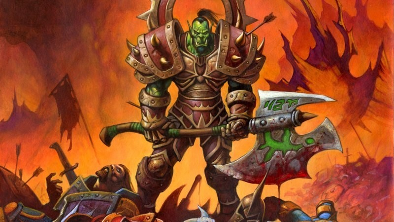Guerras vêm e vão, mas há heróis que se dedicam a dominar todos os aspectos da arte da batalha sem descanso. Guerreiros combinam força, liderança e vasto conhecimento em armas e armaduras para criar o caos no campo de batalha. Alguns protegem a linha de frente com escudos, segurando o inimigo enquanto seus aliados os auxiliam com feitiços e disparos. Outros deixam o escudo de lado e liberam sua fúria na ameaça mais próxima contando com uma grande variedade de armas letais.
Informações da classe
Os guerreiros se equipam cuidadosamente para o combate e enfrentam seus inimigos de frente, deixando os ataques resvalarem em suas armaduras pesadas. Eles usam diversas táticas de combate e uma grande variedade de tipos de armas para proteger seus aliados mais vulneráveis. Os guerreiros devem dominar cuidadosamente sua raiva – o poder por trás de seus ataques mais fortes – para maximizar sua eficácia em combate.
Paladin - Paragons of Justice
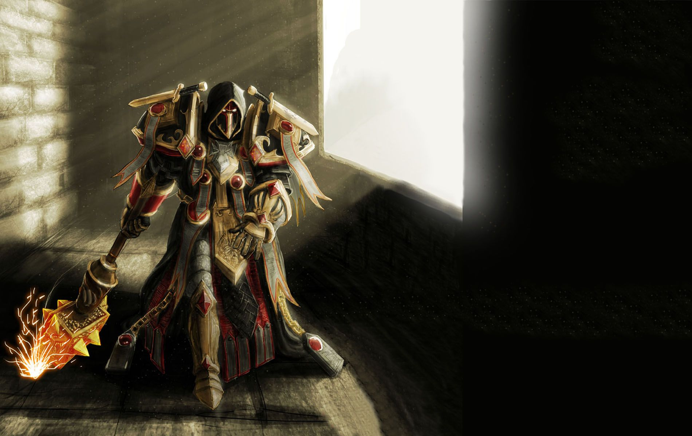Este é o dever do paladino: proteger os fracos, trazer justiça aos injustos e exterminar o mal nos confins mais sombrios do mundo. Estes guerreiros sagrados estão equipados com armaduras de placas para enfrentar os inimigos mais perigosos e são adeptos da benção da Luz que lhes permite curar feridas, e em alguns casos, ressuscitar os mortos.
Informações da classe
Os paladinos enfrentam os inimigos de frente, contando com armaduras pesadas e cura para sobreviver na batalha. Seja com escudos massivos ou armas devastadoras de duas mãos, os paladinos são capazes de manter garras e espadas distantes de seus aliados mais fracos ou usar magias de cura para certificar que eles continuem de pé.
Hunter - Inescapable Stalkers
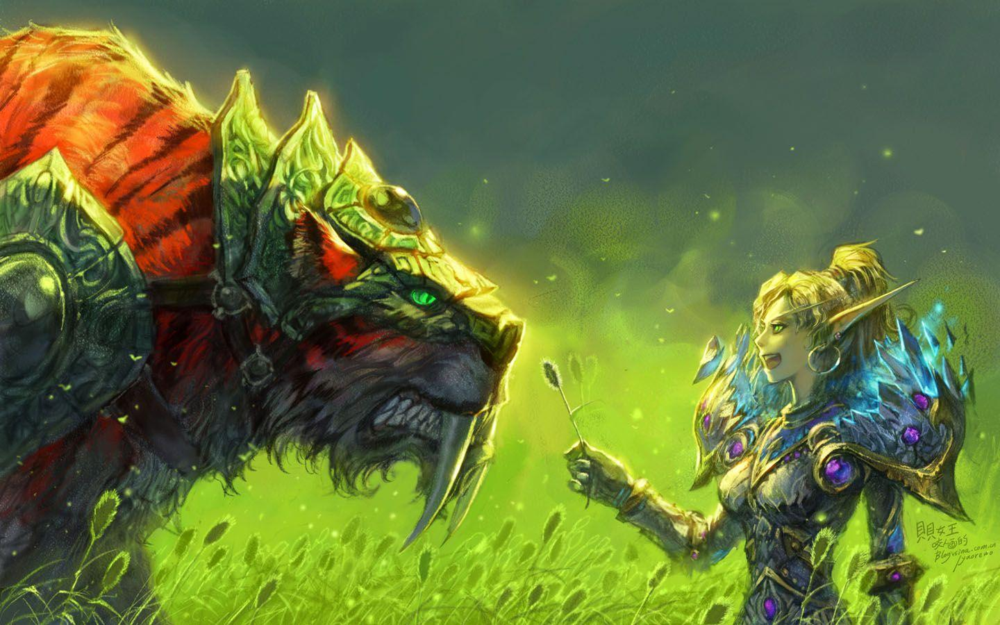Desde cedo, o chamado das selvas incita alguns aventureiros a deixarem a comodidade de seus lares para adentrarem o impiedoso mundo selvagem. Aqueles que sobrevivem acabam se tornando caçadores. Senhores de seu domínio, os caçadores são capazes de deslizar como fantasmas por entre as árvores e colocar armadilhas no caminho de seus inimigos.
Informações da classe
Os caçadores enfrentam os inimigos a distância ou de perto, ordenando que seus ajudantes ataquem enquanto atiram flechas, disparam suas armas ou desferem ataques com armas de haste. Mesmo com armamentos eficazes a curta e longa distância, os caçadores também são muito ágeis. Eles são capazes de fugir ou aprisionar os inimigos para controlar a arena de batalha.
Rogue - Prowling Cutpurses
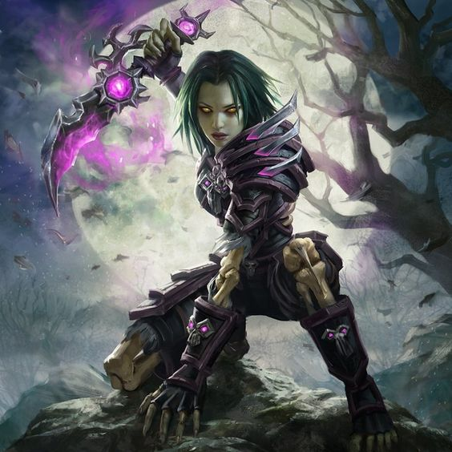Para os ladinos, o único código que existe é o contrato e sua honra pode ser comprada com ouro. Livres de escrúpulos, estes mercenários empregam o uso de táticas brutais e eficientes. Assassinos letais e mestres da furtividade, os ladinos aproximam-se de seus alvos pela retaguarda, perfuram um órgão vital e desaparecem nas sombras antes da vítima cair no chão.
Informações da classe
Os ladinos geralmente iniciam o combate com um ataque surpresa vindo das sombras seguido de golpes corpo a corpo brutais. Em batalhas prolongadas, eles utilizam-se de combinações de ataques sucessivos que abrem caminho para o golpe de misericórdia. Os ladinos, porém, devem escolher seus alvos com cautela para não desperdiçarem seus combos. Além disso, eles devem ser espertos para saber quando se esconder ou fugir de uma batalha que não está mais em seu favor.
Priest - Invokers of Light and Darkness
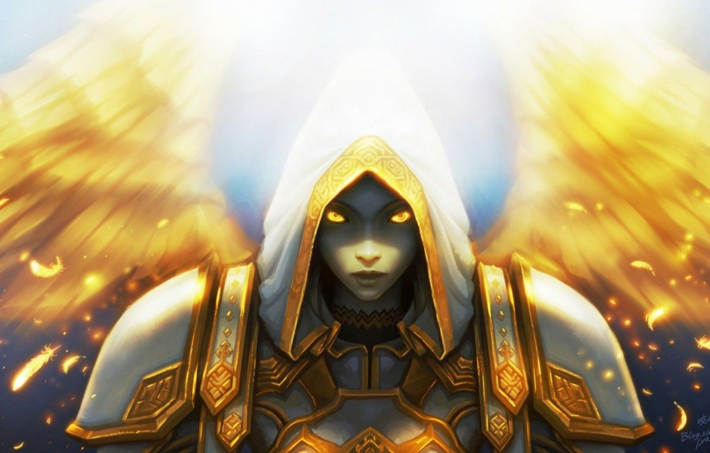Os sacerdotes são devotos da espiritualidade e expressam sua resoluta fé ao prestar serviços para o povo. Há milhares de anos, estes indivíduos abandonam os confins de seus templos e todo o conforto para apoiar seus aliados em terras devastadas pela guerra. Nenhum herói questiona os valores da ordem dos sacerdotes no meio de uma terrível batalha.
Informações da classe
Os sacerdotes usam magias de cura poderosas para se fortalecerem e também seus aliados. Eles contam com feitiços potentes de ataque à distância, porém os inimigos são capazes de surpreendê-los devido ao uso de pouca armadura. Sacerdotes experientes usam seus poderes ofensivos com cuidado quando são apontados com a tarefa de manter seu grupo com vida.
Shaman - Adepts of the Elements
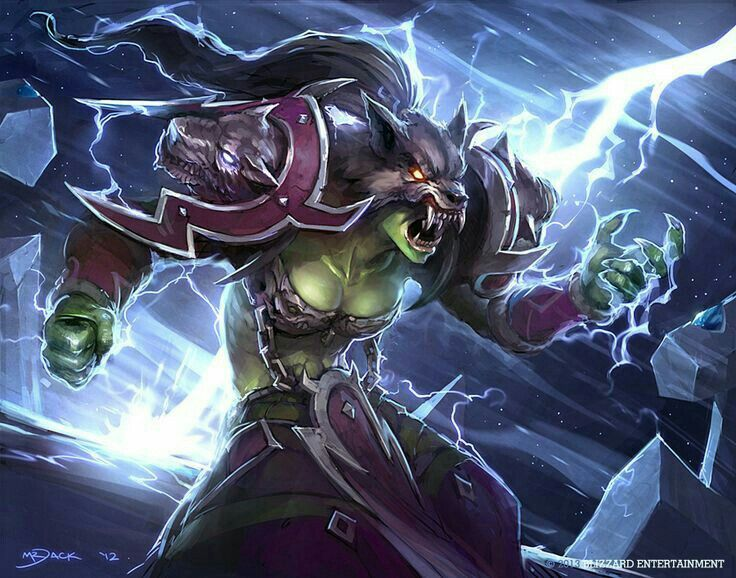Os xamãs são os guias espirituais, não do poder divino, mas das forças dos elementos. Diferentes de outros místicos, os xamãs entram em comunhão com forças que não são sempre benevolentes. Os elementos são caóticos e, livres, constantemente entram em choque uns com os outros em um ciclo de fúria primitiva interminável. É o chamado do xamã que traz equilíbrio a este caos. Atuando como mediadores entre a terra, fogo, água e ar, os xamãs evocam totens que guiam os elementos a ajudarem seus aliados e castigar aqueles que os ameaçam.
Informações da classe
Quando estão em combate, os xamãs posicionam totens de dano e controle no chão para maximizar sua eficiência enquanto minam as ações do adversário. Xamãs são versáteis o suficiente para lutar corpo a corpo ou à distância contra seus adversários, porém os mais sábios adequam seu plano de ataque de acordo com as forças e fraquezas de seus inimigos.
Mage - Masters of Time and Space
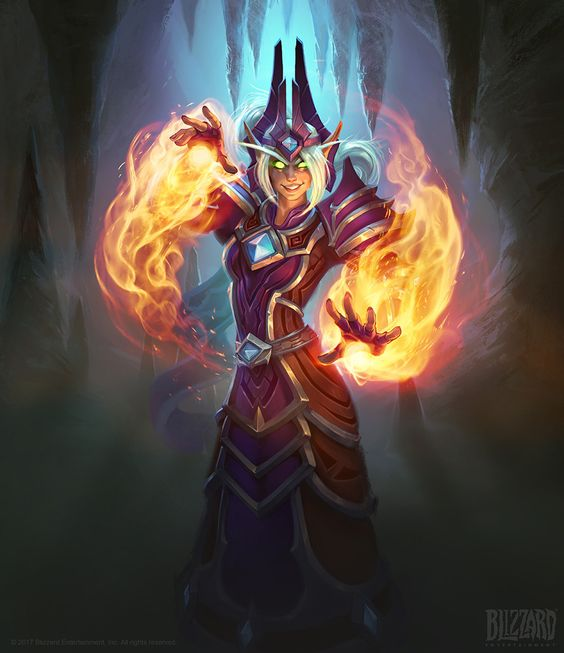Estudantes privilegiados com intelecto aguçado e disciplina inabalável podem seguir o caminho do mago. A magia arcana que os magos têm à sua disposição é igualmente incrível como perigosa e por isso seus segredos são revelados apenas para os praticantes mais devotados. Para impedir qualquer tipo de interferência com o lançamento de suas magias, os magos usam armaduras de tecido, porém seus escudos arcanos e encantamentos lhes fornecem proteção adicional. Para manter os inimigos à distância, os magos são capazes de evocar rajadas de fogo para incinerar alvos e causar erupções em áreas inteiras para colocar grupos inteiros em chamas.
Informações da classe
Os magos destroem seus adversários com o uso de conjurações arcanas. Apesar de dominarem poderosas magias ofensivas, os magos são frágeis e usam armaduras leves deixando-os particularmente vulneráveis contra ataques corpo a corpo. Os magos mais sábios utilizam suas magias com cautela para manter seus inimigos sempre distantes e imobilizados.
Warlock - Channelers of Forbidden Powers
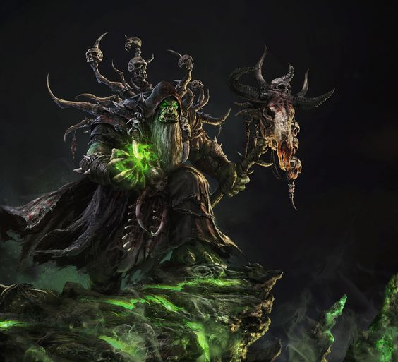Frente a poderes demoníacos, a maioria dos heróis vê a morte. Bruxos veem apenas oportunidades. Dominação é seu objetivo e o caminho encontrado para isso está no controle das artes sombrias. Para auxiliá-los em seus planos, tais feiticeiros evocam ajudantes monstruosos para lutarem ao seu lado. No início da jornada, os bruxos contam apenas com diabretes sob seu comando, mas com o tempo novos ajudantes entram em cena, como súcubos sedutoras, emissários do caos e vis selvagens para acabar com qualquer ameaça.
Informações da Classe
Os bruxos incineram e destroem seus inimigos ao utilizar combinações de pragas debilitantes e magia negra. Enquanto companheiros demoníacos ajudantes os protegem e lhes garantem benefícios, os bruxos atacam seus inimigos à distância. Tais feiticeiros possuem armaduras leves e são frágeis fisicamente, por isso os mais sábios deixam seus lacaios receberem a maioria dos ataques inimigos para salvar a própria pele.
Monk - Musing Brawlers
Quando os pandarens foram dominados pelos mogu, séculos atrás, os monges resgataram a esperança em um futuro que parecia sombrio. Com armas fora de seu alcance, os pandarens escravizados passaram a praticar a concentração de chi e desenvolveram técnicas de combate sem armas. Quando a oportunidade para iniciar a revolução apareceu, eles já estavam treinados para derrubar a força opressora.
Informações da Classe
Seja qual for sua função em combate, os monges recorrem principalmente às mãos, aos pés e a uma ligação profunda com o próprio chi para fortalecer suas habilidades. Monges também podem curar os aliados e, ao mesmo tempo, causar dano aos inimigos.
Druid - Savage Shapeshifters
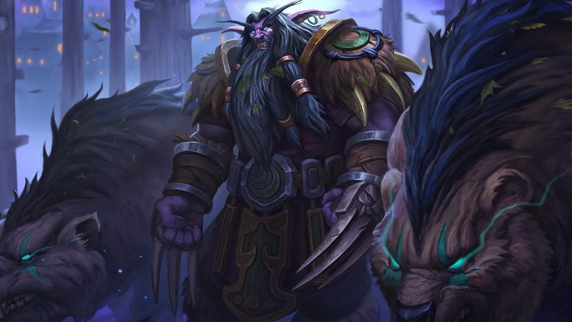Os druidas tiram proveito dos vastos poderes da natureza para preservar o equilíbrio e proteger a vida. Um druida experiente pode extrair a energia bruta da natureza, descarregando fúria celestial contra seus inimigos de grandes distâncias, imobilizando-os com raízes encantadas ou retardá-los em ciclones impiedosos.
Informações da Classe
Os druidas são combatentes versáteis e capazes de atuar em quase todas as funções: curador, tanque ou causador de danos. É fundamental que os druidas adaptem seu estilo de acordo com a situação atual da batalha já que cada uma das funções tem um propósito específico.
Demon Hunter - Unforgiving Predators
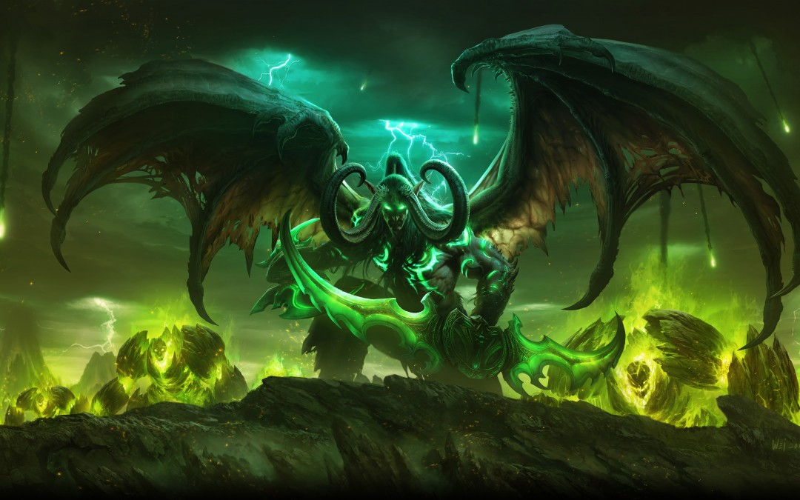Os Caçadores de Demônios, discípulos de Illidan Tempesfúria, representam um legado sombrio que amedronta tanto os inimigos quanto os aliados. Os Illidari utilizam magia caótica e vil — energias que há muito ameaçam o mundo de Azeroth — pois creem que ela é essencial para derrotar a Legião Ardente. Ao usar os poderes dos demônios que matam, os caçadores desenvolvem características demoníacas que incutem temor e desprezo nos outros elfos.
Informações da Classe
Os Caçadores de Demônios desprezam as armaduras pesadas e preferem a velocidade, aproximando-se rapidamente para cortar inimigos com armas de uma mão. Mas os Illidari também precisam usar essa agilidade de forma defensiva para que as batalhas terminem a seu favor.
Death Knight - Heralds of Doom
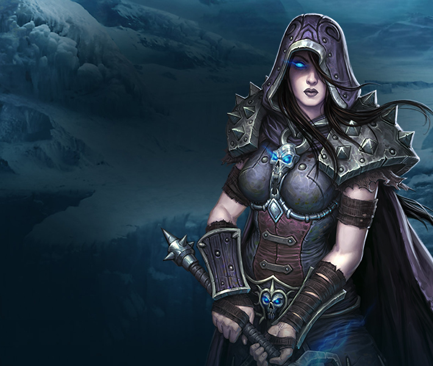Quando o controle do Lich Rei sobre os cavaleiros da morte cessou, seus antigos campeões encontraram um novo propósito como Cavaleiros da Lâmina de Ébano. Após vestir o elmo a fim de conter o Flagelo dos mortos-vivos, Bolvar Fordragon reuniu uma nova geração de cavaleiros da morte para defender a causa da Lâmina de Ébano.
Informações da Classe
Os cavaleiros da morte enfrentam seus adversários com ataques corpo a corpo, complementando os golpes de suas armas com magias negras que deixam os inimigos vulneráveis ou causam danos com poder profano. Eles atraem os inimigos para batalhas um a um, evitando-os de atacar seus aliados mais fracos. Para impedir que os adversários fujam de seu alcance, os cavaleiros da morte devem sempre ficar atentos aos poderes que evocam das runas e adotar o ritmo adequado para seus ataques.